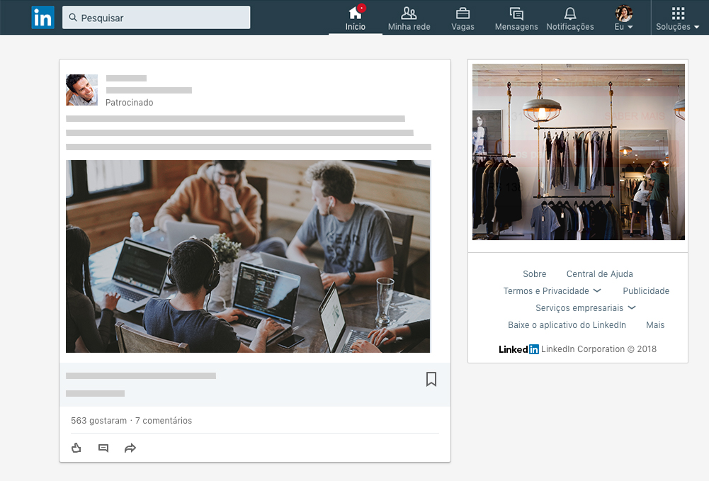
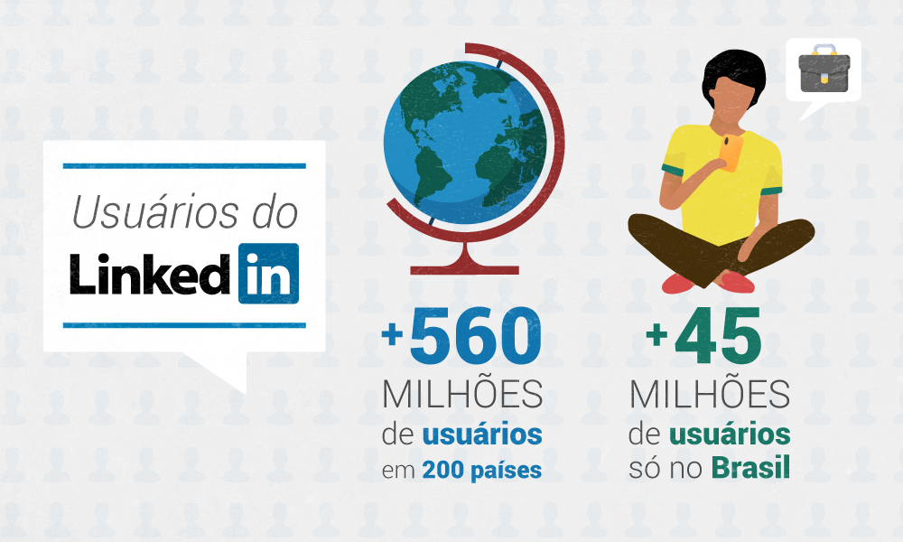
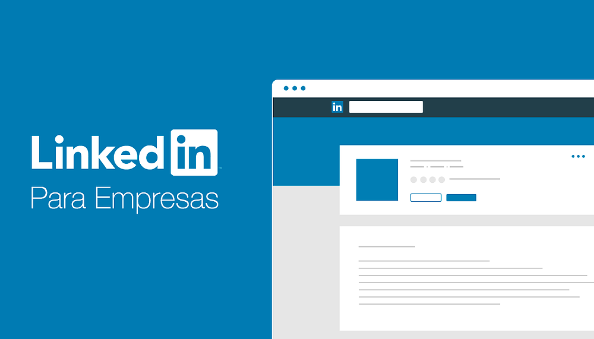

O que é LinkedIn?
LinkedIn é uma rede social que tem como foco os relacionamentos profissionais.
Podemos dizer que é uma grande plataforma que ajuda pessoas e empresas a anunciarem vagas, procurar empregos, alimentar a sua rede de contatos (networking), fazer parcerias, dentre outras atividades relacionadas.
O LinkedIn é uma rede de negócios lançada no início de 2003, e está sediado no estado da Califórnia. Da mesma forma que as outras redes sociais, como o Orkut e o Facebook, o LinkedIn permite a criação de perfis online, mas está voltado para aspectos profissionais.
O principal diferencial do LinkedIn para outras redes sociais está no seu caráter mercadológico, tanto para quem está em busca de uma nova vaga, quanto para empresas e profissionais já estabelecidos. As funcionalidades do LinkedIn permitem que sejam criados perfis e páginas com grande volume e profundidade de informações e que devem ser exploradas ao máximo. Isso porque são elas as principais responsáveis pela imagem do profissional ou empresa e facilitarão o aparecimento nos resultados de buscas.
Muitas empresas preferem a rede social como principal ferramenta para recrutamento e seleção de candidatos. No perfil profissional, é possível inserir a formação acadêmica, cursos de todos os tipos, licenças e certificações, competências, além de poder ser recomendado pela rede de contatos.
Assim como o Facebook, o formato timeline permite a publicação de textos, fotos, vídeos e links para as conexões ou seguidores. Com o crescimento da popularidade, os anúncios no LinkedIn também se tornaram uma grande fonte de investimento para empresas que desejam atingir o público da rede social.
Saber como utilizar a rede social profissional de forma mais assertiva é abrir um leque de possibilidades de novos contatos e, consequente, negócios mais rentáveis. Para isso, é preciso ter estratégias que foquem, principalmente, na relevância do perfil ou company page na comunidade em crescente ascenção.